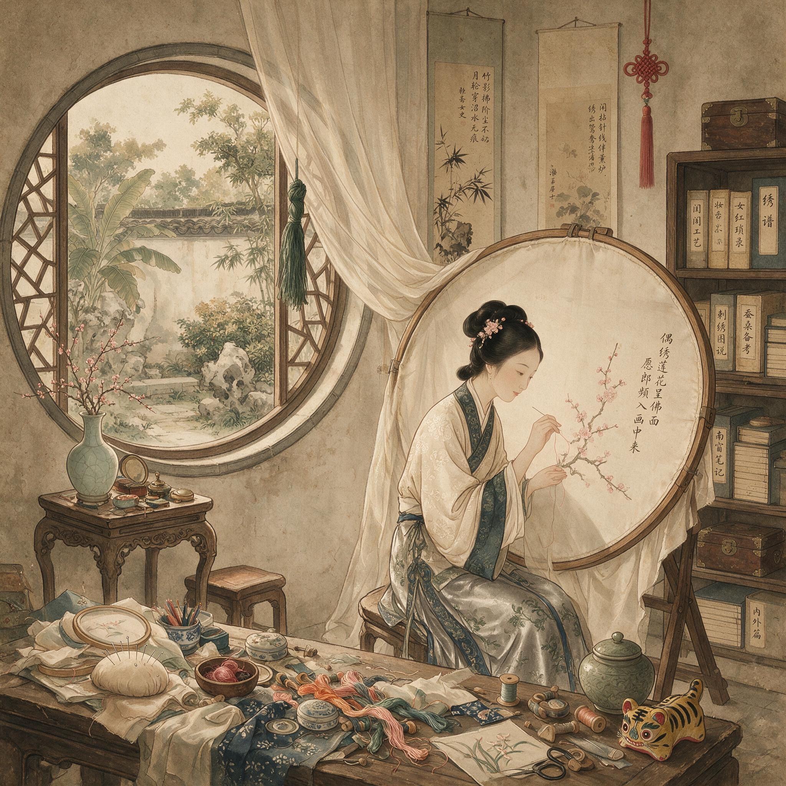

第 4 章
绣绷前的世界
绣绷架在窗下已经三天了。不是同一块绸料。头一天绷的是月白素缎，苏州陆家三小姐陆令仪在绣一对蝶——用了十二种蓝线，翅膀上的鳞粉要掺入极细的银丝，每落一针得侧着绷面看反光对不对。第二天

绣绷前的世界：历史出版插图
AI 生成插图，非史实影像。
换了一块浅绯的绢，是陆家二房的大少奶奶孙氏在补嫁衣上的石榴纹。今天绷上去的是一块石青色暗花缎，尺寸不大，一尺二寸见方，四角用竹条撑得极紧，缎面绷到手指弹上去有脆响的程度才算合格。
这块石青缎子在绷架上的位置略偏左。不是疏忽。绣的人坐在绷架正前方，右手运针的习惯位置刚好落在画面中心偏右——那是一枝还没绣完的白玉兰，花瓣只做了三片，余下的部分用墨笔勾了底稿，线条极淡，凑近才能看清是折枝花的构图。
花枝从右下角斜出，向左上方伸展，最后一朵半开的花苞正好落在整幅画面的黄金分割点上。陆令仪把针在发间抿了一下。这个动作她做了十年，从七岁开始学绣到现在，已经不需要想——针尖擦过头油的力度刚好让针更滑，又不至于污了丝线。
她今天用的是苏针，针身比普通绣针略长半分，针鼻极细，能穿过劈成十二股之一的丝线。劈丝是昨晚上做的。丫鬟捧了灯在旁边照着，她把一根绒线先分成两股，再分成四股，最后劈到头发丝粗细的十二分之一，每一股都要对着光检查有没有起毛——起毛的不能用，绣玉兰花瓣必须用最光滑的丝线，否则反光不均匀，花瓣就没有那种饱满的质地。劈好的丝线绕在素色线板上，按深浅排了序：最浅的月白用来绣花瓣根部受光面，稍深的湖色做转折，花瓣尖端要泛出极淡的青——那是玉兰将谢未谢时的颜色。
陆令仪今年十七岁，选这个颜色不是随便选的。石青色缎底配青白色玉兰，是她外祖母喜欢的配色。这幅绣品是寿礼。下个月初九，外祖母周太夫人六十九岁生日，按苏州风俗做“九”不做“十”，六十九是大寿。
绷架旁边的矮几上摊着一本翻开的册子。不是绣谱——绣谱在楼上书房里，是万历年间倪仁吉的《绣心经》，陆令仪八岁就开始照着练针法。
矮几上这本是她自己的花样簿，纸页已经泛黄起毛边，里面夹着几十张花样底稿：有从父亲书房里借来的《十竹斋笺谱》上临下来的折枝花卉，有母亲年轻时画的蝴蝶粉本，有去年去虎丘时看见的兰花回来凭记忆勾的线稿，还有两张是大嫂从娘家带来的闽南花样，构图比江南的满密，枝枝叶叶挤在一起，看着热闹。花样簿旁边是一只针线匣。黑漆木胎，铜合页，打开分三层：上层是针插，密密匝匝扎着几十根粗细不同的针；中层分小格，装金银线、孔雀羽线、马尾线；底层最重，是顶针、剪刀、锥子和一块磨针用的细青石。
这匣子是陆令仪十三岁时母亲给的——不是新打的，是母亲年轻时用过的旧物，匣盖内侧贴了一张红纸，写着“勤乃得功”四个字，墨迹已经模糊了。陆令仪把针穿过缎面，针尖从画好的花瓣轮廓线上冒出来。
她左手在绷架下面接住针尖，轻轻往上顶了一下——这是苏绣擞和针的起手式，针脚要藏在花瓣根部，将来一层层叠上去，表面看不出起针的痕迹。第一针落下去之后，手就顺了。
接下来两个时辰里，她的右手在绷面上方移动，左手在绷面下方配合，针上下翻飞的速度不快但极其均匀，大约每呼吸两次落三针——这是练出来的节奏，快了针脚不均匀，慢了丝线会松。房间里很安静。不是没有人说话，是那种安静——窗外天井里有丫鬟在晾衣裳，竹竿碰着青砖墙发出闷响；隔壁屋里二嫂在教五岁的侄女认字，“天地玄黄”念到第三遍时声音已经有点不耐烦；楼下厨房里传来剁肉的声音，中午要吃荠菜馄饨。这些声音都有，但都像是隔了一层水。绣绷前面的人听见了，但不用回应。
刺绣的规矩是：手上在做活的时候可以不说话。这个“可以不说话”是礼教给闺秀的极少数的合法沉默权——因为妇功需要专注，专注就不能陪人聊天。所以绣绷前的人有权保持安静。
这个权利比看起来要大得多。陆令仪的母亲周氏十八岁嫁进陆家，二十岁生下长子，之后二十五年里几乎没有一天是完全属于自己的。
清晨起来要先去婆婆房里请安伺候早膳，然后安排一天的饮食采买，上午要教女儿们读书写字做针线，午后要应酬来访的女眷或者去别家走动，傍晚要检点厨房晚膳和次日的食材准备。在这些事情中间还插着无数零碎：哪个丫鬟犯了错要管教、哪个孩子生了病要请郎中、哪个亲戚家有了红白事要备礼、哪个佃户来交租要对账。周氏的一天是被切碎的。
但每天下午未时到申时之间，她会坐在自己房里的绣绷前面——这个时辰婆婆在午睡，孩子们各有各的功课，家里没有非她不可的事。丫鬟知道这个时候不能打扰太太。周氏绣的东西不多。一年大概能完成三四幅尺幅稍大的绣品：一幅寿屏、一对枕顶、一幅手帕、或者一幅准备给女儿做嫁妆的裙面。按工时算，一幅一尺二寸见方的绣品从描样到完工大约需要六十到八十个工时——不是连续做，是每天做一点。
但周氏在绣绷前坐的时间远远超过这个数。很多时候她只是坐在那里穿针引线，做得很慢，一根线能拆了重绣三四遍。女儿陆令仪小时候不懂，问母亲为什么同一片叶子要绣了拆拆了绣。
周氏说颜色不对。后来陆令仪自己坐在绣绷前面才明白：有时候不是颜色不对。是需要在绣绷前面坐着。这个需要是什么，周氏没有跟女儿明说过。但她的身体语言在绣绷前面和在其他地方是不一样的。在婆婆房里站着伺候的时候，周氏的脊背是直的，肩膀微微内收，双手交叠在腹前——这是标准姿势，做媳妇做了二十五年已经刻进骨头里。在厨房里指挥采买的时候，她的声音是快的，眼神是锐的，手指头能同时点着账本上的数字和筐里的菜蔬。
但在绣绷前面坐下来之后，她的肩膀会先松下来——不是垮，是松，像卸下一副看不见的担子。然后她会先不拿针，就那么坐着看一会儿绷面上的花样，有时候还会伸手摸一摸丝线的光泽。这个动作不产生任何劳动成果。但它产生别的东西。
周氏在绣绷前面坐一刻钟之后，通常会开始说话。不是对谁说——有时候是对在旁边理线的女儿说，有时候是对进来添茶的丫鬟说，有时候屋里只有她一个人她也说。
说的内容很杂：今天早上婆婆说那句话是什么意思、娘家弟弟来信说今年收成不好想借银子、大女儿的亲事对方家里到底靠不靠谱、巷口那家新开的绸缎庄的缎子比别家便宜三成是不是有什么猫腻。这些话在别的场合不能说——跟丈夫说显得妇人多嘴、跟妯娌说怕传出去、跟婆婆更不能说。但在绣绷前面。因为绣绷前面是在做活，说话只是做活的附属品。这个附属品慢慢变成了主要内容。
陆家后楼二层东厢房有三架绣绷。大的一架是周氏的，中等的是陆令仪的，小的一架是陆令仪的妹妹陆令修的——她才十一岁，还在练针法，绷面上是一块粗绢，绣的是最简单的竹叶纹。母女三人各坐在自己的绷架前面时，房间里的信息流动就开始加速。
首先是关于绣品本身的技术信息。周氏会告诉女儿们哪种丝线在哪家铺子买最划算：观前街的瑞蚨祥丝线颜色全但价钱贵两成，阊门外的生春堂价钱公道但要熟人带着去才能拿到好货色；
金银线不要在苏州买，苏州本地不产金银线，都是从南京贩来的，不如直接托人从南京带——二舅母的娘家在南京，每年过年走亲戚时可以捎带一批。这些信息对女儿们将来主持中馈有实际用处——采购丝线跟采购食材的逻辑是一样的：要知道货源、比价、建立可靠的供货关系。
但说着说着就超出了丝线的范围。周氏说起二舅母的娘家在南京时，顺带说起二舅母当年嫁过来时嫁妆里有一幅顾绣的《麻姑献寿》——顾绣是上海露香园顾家的绝艺，一幅中堂在市面上能卖到十几两银子甚至更高。二舅母那幅是顾家旁支的一位女眷绣的，不算最精的但也值四五两。后来二舅母手头紧的时候把这幅绣品托人寄售在玄妙观旁边的绣货铺里，标价六两银子——不敢让夫家人知道，是偷偷托娘家嫂子办的。那幅绣品最后被一个湖州来的客商买走了，价钱砍到四两二钱成交。二舅母用这笔钱给女儿置办了一对银镯子做嫁妆。
陆令仪听到这里时手里的针停了一下。“寄售”这个词在她的认知里原本不属于闺秀的世界。
闺秀的女红是自用或馈赠——给自己做衣裳、给长辈做寿礼、给平辈做人情、给晚辈做嫁妆。这些东西不应该出现在市肆的货架上标价出售。但二舅母做了。而且不是个案。
周氏说这话时语气很平淡，像是在说一件极其正常的事。她的针没有停——一片牡丹叶子的反叶正在用套针一层层叠色。她一边运针一边告诉女儿们：玄妙观旁边的绣货铺表面上卖的是匠人绣品，但懂行的人都知道铺子里最好的货往往不是匠人做的。有些是庵堂里的尼姑绣了寄售的——尼姑不受闺阁礼法约束，可以公开出售绣品。有些就是闺秀私下托人转手的——托尼姑、托娘家亲戚、托信得过的老仆妇、甚至托常来家里走动的绣娘带出去寄卖。
这条渠道的存在意味着什么？意味着一个士绅家庭的闺秀虽然不能迈出大门去市场上叫卖自己的劳动成果，但她的劳动成果仍然可以进入市场流通。而且价格不低。一幅精工闺阁绣在市面上的价格通常是同等尺寸匠人绣的两到三倍——因为闺秀绣品量少、工细、花样不俗气，更重要的是有闺秀亲制这一层文化附加值。
买这些绣品的人不是普通百姓——普通百姓穿布衣用不着绣品——而是商人家的女眷、中等官员家庭的太太、或者外地来苏州贩货的客商买回去转手牟利。周氏说这些的时候没有用“经济链”这个词。她说的是：你二舅母那幅绣品到了湖州之后又被转手卖到了杭州，最后落在一个盐商太太手里。那盐商太太不知道绣品的来历——只知道是苏州闺秀的手艺。不知道来历反而更好。因为一旦知道来历就可能牵扯出闺秀私售绣品的尴尬——虽然这种事大家都心照不宣地做，但摆到台面上说就是另一回事了。礼教要求闺秀不以利累名，女红是妇功不是生计。
但如果妇功的成果可以通过隐蔽渠道变成银子——而这些银子又可以以体面的方式回流到闺秀手中——那么在妇功和生计之间那条礼教划出的清晰界线就开始模糊了。陆令仪把银丝线穿过缎面的时候在想一个问题：外祖母周太夫人喜欢青白玉兰这个信息是从哪里来的。不是直接听外祖母说的。外祖母住在苏州城外木渎镇上，陆令仪一年能去两三回已经算频繁了。
见面时外祖母会拉着她的手问些家常话——读了什么书、绣了什么花、吃了什么点心——但不会特意说起自己喜欢什么颜色的玉兰。这个信息是通过母亲周氏传过来的。周氏每隔十天半月会回娘家一趟，或者派人送些东西过去，每次都会有回礼和口信带回来。在这些往返中，外祖母的喜好、身体状况、情绪变化、对家族事务的态度——所有这些信息都在流动。
而陆令仪现在绣的这幅石青缎玉兰寿礼，本身就是一次信息流动的结果：外祖母的审美偏好通过母女网络传递到外孙女手中，外孙女用刺绣技艺将这个信息转化为实物，实物将在寿宴上当众展示——展示时所有来祝寿的女眷都会看到这幅绣品并做出评价——这些评价又会成为新的信息通过女眷网络扩散出去。寿礼不是单纯的礼物。它是一份公开声明。
声明的内容包括：陆家三小姐的绣工到了什么水平（这关系到她将来议亲时的身价）、陆家对周太夫人的重视程度（这关系到两家的关系亲疏）、周太夫人喜欢青白玉兰这个审美偏好（这向其他想讨好周太夫人的人提供了有用信息）、石青缎配青白花的配色方案是否时新雅致（这会影响到接下来一年里木渎镇上女眷们的刺绣流行趋势）。
一幅寿礼绣品承载的信息量远远超过它的物质价值。周氏当然知道这一点。所以她在帮女儿选花样时斟酌了很久。太复杂的花样显得刻意炫技不够含蓄；太简单的花样显得敷衍不够敬重；用大红大绿的花卉太俗气配不上周太夫人的品味；用梅兰竹菊四君子太清高显得跟外祖母不够亲近。
最后选了折枝玉兰——玉兰是富贵花但不俗艳、折枝构图留白多显得疏朗有书卷气、青白色调含蓄雅致、而且玉兰开花早寓意早春，对老人来说有祝愿健康长寿的意思在里面。每一个选择都有讲究。
这些讲究不是写在书上的——没有一本绣谱会教你怎么根据人情世故选花样——而是通过母女之间在绣绷前面的对话一代代传下来的。周氏的母亲当年教周氏选花样时说的话，周氏现在说给陆令仪听；陆令仪将来也会说给自己的女儿听。绣绷前面的低语构成了一条非正式的知识传递链——这条链不写入任何正式文本，但它比正式文本更精确地指导着闺秀们的日常实践。
这条链传递的不只是刺绣技巧。陆令仪十三岁那年第一次独立完成一幅完整的绣品——是一方手帕，绣的兰花。周氏看了之后说针脚还算齐整但兰叶的转折太硬没有飘逸感，然后忽然说了一句：你爹年轻时给我写的第一封信里夹着一片兰花叶子。
这句话跟刺绣技巧没有任何关系。但它让十三岁的陆令仪第一次意识到母亲在成为母亲之前也是一个少女——有人给她写信、信里夹着兰花叶子、那片叶子代表什么意思母亲到现在还记得。这个意识不会改变任何事情——周氏仍然是陆家的太太每天操持家务伺候婆婆——但它让陆令仪对母亲的理解多了一个维度。
这种维度的增加是绣绷前面才能发生的。因为只有在绣绷前面母女之间才有足够长的不被打断的相处时间——一幅绣品要做几十个时辰这些时辰里不可能一直讨论针法技巧总要说些别的什么。而这些别的什么往往比针法技巧更重要：母亲年轻时的事、父亲和母亲是怎么认识的、外祖父家的兴衰、婆媳之间的相处之道、夫妻之间的微妙分寸、哪个亲戚可以信任哪个亲戚要提防、家里哪块田的收成被管事私吞了多少、大哥娶亲时女方家里提出的条件背后有什么隐情。
这些信息在正式场合不会出现。饭桌上不能说因为男人们在谈外面的事；客厅里不能说因为有外人在场；卧室里不能说因为夫妻之间有些话反而不好说——丈夫不一定理解妻子娘家的复杂关系也不一定有耐心听这些琐碎细节。只有在绣绷前面这些信息才能找到出口：说话的人手上在做活所以不觉得是在专门聊天心理负担轻；听话的人也在做活所以不觉得是在打听闲事接受度更高；
而且刺绣的重复性劳动——落针、拔针、换线、再落针——创造了一种稳定的节奏这种节奏本身就有催眠似的放松效果让人更容易说出平时不会说的话。这是礼教的缝隙。
礼教推崇妇功的目的是约束女性身心——让她们把时间和精力花在针线活上就不会胡思乱想更不会做出格的事。《女诫》里说专心纺绩不好戏笑就是这个意思：让你忙到没空想别的。
但礼教的制定者没有考虑到一个关键变量：重复性手工劳动不需要占用全部大脑带宽。刺绣是一种需要专注但不需要持续高度集中注意力的劳动。熟练的绣娘可以一边运针一边思考一边说话——手在做功脑在运转嘴在交流三件事并行不悖。而且因为手上不能停所以说话反而更放松：不用看着对方的眼睛不用在意自己的表情不用做出恰当的身体语言回应只需要让针继续走线继续落话继续说就行。这个状态接近于某种形式的冥想——但不是冥想那种向内收敛的意识状态而是向外发散的信息交换状态。
绣绷前面的人进入了一种手忙心闲的节奏：手在按照既定的针法规律运动不需要每个动作都经过意识决策；心反而空出来了可以接收和输出信息。
陆令仪在绣第三片玉兰花瓣时妹妹陆令修忽然问了一句：姐姐你将来想嫁什么样的人？十一岁的女孩问这个问题时语气是好奇而不是羞涩——她还没到真正理解婚姻含义的年纪只是听到母亲和姐姐偶尔提起这个话题就顺口问了。陆令仪手里的针没有停但她没有马上回答。这个问题如果在饭桌上被问到她会脸红低头不说话——因为父亲和哥哥们会笑。但在绣绷前面被妹妹问到这个问题的性质不同：这是两个女孩在做活时的私密对话不受外界注视干扰。
品性好的。陆令仪最后说了四个字。这个回答很标准——任何一本女教书都会告诉闺秀择婿首重品性而非财富地位。
但陆令仪说完这四个字之后沉默了几息又加了一句：最好不是长子。这句话不在任何女教书里。
不是长子的意思是不用承担宗妇的责任——不用伺候公婆到最后一刻不用管理一大家子的吃喝拉撒不用在妯娌之间做调解人不用每年祭祀时操持几十桌供品的准备不用在所有家族大事上被推到最前面。
周氏就是长媳她过了二十五年这样的日子。陆令仪看着母亲的生活得出了自己的结论：品性好是必要条件但不是充分条件；除此之外还要看对方在家中的排行位置决定了自己将来要承担多少家族责任。这个结论不能在任何正式场合说出来——说出来就是不孝不悌不知好歹。
但在绣绷前面可以跟妹妹说因为妹妹将来也要面对同样的选择而母亲此刻不在屋里只有姐妹二人并排坐在各自的绷架前面手上有活嘴里有话谁也不觉得这个话题有什么不妥。这就是非正式女性信息场的运作方式。
它不挑战礼教的正式规范——陆令仪不会在公开场合表达对长媳身份的看法更不会拒绝父母安排的亲事如果对方恰好是长子她也只能接受——但它在规范内部创造了一个认知空间让年轻女性可以在正式服从的同时形成自己的判断和偏好这些判断和偏好会在实际决策中悄悄发挥作用比如在父母征求她意见时委婉地表达倾向或者在议亲过程中通过母亲传递一些微妙的态度信号。
这些信号最终会不会影响婚姻结果？不一定。但它们确实进入了信息流——母亲听到了会记住父亲问起来母亲会转述媒人打听时母亲会有意无意地透露出去最后对方家庭在做决定时可能会把这个因素考虑进去也可能不会。但至少信息已经发出去了。
这就是阈界织造——在礼教设定的边界地带利用日常实践中的缝隙反复编织信息网络和行动空间这个过程不撕裂既有的社会布料但改变了布料上的图案纹样。陆令仪把第四片花瓣的轮廓线绣完之后停下来检查反面的针脚。
苏绣讲究平齐细密匀顺光七个字其中齐和顺都要看反面——反面针脚乱说明运针方向不对正面再好看也是外行活。她把绷架翻过来借着窗光检查石青缎的反面：针脚排列整齐每一针的长度几乎相同起针收针的位置都在花瓣轮廓线内侧没有一根线头露出来。这个检查动作是所有苏绣闺秀的习惯——但它在隐喻层面有另一层意思：真正的质量往往藏在看不见的地方而闺秀们恰好是最懂得如何在看不见的地方下功夫的人。
因为她们的生活本身就是如此。表面上一切服从礼教规范：不出闺门、不涉外事、不谋私利、不言财利、一切行为以家族利益和妇德标准为准绳。但在表面之下她们通过女红劳作创造了价值通过绣品流通积累了私产通过母女姐妹之间的低语建立了信息网络通过寿礼馈赠影响了社会关系通过嫁妆准备参与了家庭经济博弈。
所有这些都发生在礼教的眼皮底下却不被礼教的语言所描述。礼教的语言只说妇功不说产值；只说中馈不说采购权；只说内助不说信息网；只说从人不说影响力；只说闺范不说认知空间。
但生活实践不会因为语言不描述就不存在。那些没有被描述的东西日复一日地在绣绷前面发生积累沉淀最后变成一种实际存在但不可言说的力量。这种力量的大小因人而异因家庭而异因时代而异但它确实存在并且可以被观察和度量。
度量的方法之一是看绣品的去向。陆家后楼里每年大约完成二十到三十幅尺幅较大的绣品其中大约三分之一用于家庭自用——家人的衣裳裙面被面枕顶之类；三分之一用于人情往来——寿礼婚礼满月礼节礼等各种馈赠；还有三分之一去向不明。
去向不明的意思是：这些绣品完成了但没有出现在家庭自用的物品里也没有出现在馈赠记录中但它们确实被带出了陆家后楼。它们去了哪里？
一部分可能通过周氏娘家渠道转手寄售——就像二舅母那幅顾绣一样流入市肆换成了银子而这些银子又通过同一渠道回流到闺秀手中成为她们的私房钱。私房钱可以做什么？
可以补贴月钱买更好的胭脂水粉首饰衣料可以在出嫁时额外添置嫁妆可以在婚后应对不时之需可以在丈夫不知道的情况下资助娘家人可以做很多很多礼教不鼓励但也不明确禁止的事情。
另一部分去向不明的绣品可能被用作更隐蔽的人情货币——不是正式的寿礼婚礼馈赠而是私下送给了某位能在关键时刻帮忙说句话的人：比如丈夫的上司的太太比如族中掌管公产的叔伯的妻子比如在衙门里有关系的亲戚家的女眷。这些私下馈赠不进入正式的人情往来账本但它们产生的社会资本是真实的而且在关键时刻可以兑现为实际的利益。
还有一部分绣品被压在箱底等待未来的某个时刻使用——最典型的就是嫁妆里的绣品储备。陆令仪从十三岁开始就在有意识地积累自己的嫁妆绣品。
这不是母亲要求的也不是任何书面规矩规定的而是她从姐姐们那里学来的惯例：每个闺秀到了适婚年龄之前几年就会开始准备嫁妆中的绣品部分这些绣品不是等到亲事定了才赶工而是提前几年开始慢慢积累因为精工绣品需要大量工时临时赶出来的活质量不够好会影响嫁妆的整体评价进而影响夫家对新妇的重视程度。
所以陆令仪的箱子里已经攒了十几幅绣品：两对枕顶一幅被面四条手帕一幅桌屏一幅观音像还有几幅尺幅较小的花样准备将来做鞋面和衣缘装饰用。这些绣品现在看起来只是普通的针线活但当它们作为嫁妆的一部分装进红漆描金的奁箱抬进夫家大门时它们的性质就变了——它们变成了经济运算中的一个变量。夫家会根据嫁妆的数量和质量来评估新娘的价值和娘家的诚意；
娘家会根据对夫家家境和态度的判断来调整嫁妆的丰薄；媒人会在两家之间传递关于嫁妆标准的微妙信息；
而新娘本人则在这场博弈中既是筹码也是参与者——她的嫁妆决定了她进入夫家后的初始地位和自主空间而她亲手绣制的那些绣品恰恰是嫁妆中最能体现个人价值和诚意的部分。
一幅绣品的旅程从描样配线开始到绷架前的漫长工时再到作为寿礼嫁妆或人情货币的最终去向贯穿始终的是女性的劳动付出和价值创造但这些价值最终被计入的是家族经济而不是个人账户。这是不平等的但在这个不平等的大结构内部仍然存在着微小的弹性空间。
陆令仪把石青缎上的玉兰花瓣全部绣完时天已经暗下来了。丫鬟进来点了灯把烛台放在绷架左侧——光要从左边来才不会在缎面上投下右手的影子。灯光下石青缎面泛出一层幽暗的光玉兰花在光晕里显得比白天更白像是从缎子深处长出来的而不是用丝线绣上去的。
这幅寿礼还有大半没做完：花枝花萼叶片题字印章边框装饰每一个部分都需要不同的针法和配色每一种针法都需要几十个时辰的练习才能做到得心应手每一个配色选择都涉及对受礼者审美偏好的判断和对流行趋势的把握而这些判断和把握又依赖于母亲传授的经验和自己积累的眼力。所有这些合在一起就是妇功的全部含义——但它同时远不止妇功。
周氏从自己的绷架前站起来走过来看女儿的进度。她低头看了一会儿用手指轻轻摸了一下花瓣表面的丝光然后说了一句：你外祖母会喜欢的。说完就出去了没有多余的话。
陆令仪继续运针。烛火微微晃动了一下大概是窗外有风从窗缝里钻进来。她左手按住缎面稳住绷架等火苗重新稳定下来之后才继续落下一针。这一针落在花萼和枝干的连接处要用最深的老绿色做转折面让花萼看起来是托住花瓣的而不是贴在花瓣下面的。这个细节外祖母可能不会注意到——寿宴上那么多人那么多礼物大家只会匆匆扫一眼夸几句好看就过去了没有人会凑近看花萼和枝干的连接处用了什么针法配了什么颜色。
但陆令仪还是会把它做好。因为这幅绣品最终不只是给外祖母看的。它会被展示被评价被记住被比较被谈论被转述被传阅甚至可能被某个来祝寿的女眷看中之后托人打听陆家三小姐的女红水平如何进而引出关于婚事的进一步询问。所有这些都取决于每一个细节是否做到了无可挑剔。
所以花萼和枝干的连接处虽然小但它承受着整幅绣品的结构重量——就像闺秀们在家庭和社会结构中占据的位置虽然小但承受着大量看不见的压力和期待而她们应对这些压力的方式就是在每一个细节上都做到足够好让挑不出毛病来。挑不出毛病本身就是一种保护也是一种武器。
夜深之后陆令仪收了针把绷架用一块青布罩起来防止落灰。线板针匣花样簿都归置回原处明天继续用的丝线留在外面用湿布盖上保持润度——丝线太干了容易起毛影响光泽。她站起来的时候肩膀酸了一下——坐了两个时辰没动地方肩膀和颈椎承受了持续的低强度压力这是所有刺绣女性都要承受的身体负担当时没有人把它叫做职业病大家只说做活做得辛苦然后揉一揉继续做。
窗外天井里已经完全暗下来了，只有厨房方向还有一点灯光，大概是厨娘在准备明天的早膳食材，灶台上的锅还在冒着最后一点热气，就像上一章结束时那样——那口锅的热气蒸腾上去，模糊了灶壁上“中馈惟谨”四个字的笔画轮廓，而此刻陆令仪收起针线，把石青缎上的玉兰花留在黑暗里，让它在明天继续生长。这幅玉兰最终会被装裱成寿屏，放进红木框子里，和其他寿礼一起摆在周太夫人的寿堂上，接受所有来宾的目光洗礼，然后被收进箱笼，成为周太夫人的私人物品，将来某一天可能会作为遗产分给某个儿媳妇或者孙女，再进入下一个家庭的物质循环体系，在其中继续承担它作为人情货币、嫁妆储备或情感信物的多重角色，而所有这些角色的转换都发生在礼教的规范框架内，却又不断溢出规范的边界，向实际生活的复杂纹理渗透进去，如同丝线穿过缎面之后在反面留下的针脚——看不见，但撑住了正面的全部图案。
而在这个过程中，真正被织造的不只是那幅石青缎上的白玉兰，还有陆令仪本人对这个世界的认知方式，和她在这个世界中的行动空间的大小、形状以及边界所在的位置——所有这些，都在每一次落针、拔针、换线的重复节奏中，被一针一针地重新定义，虽然每一针的改变都微小到几乎看不见，但几十万针累积下来的位移，足以让一个十七岁的女孩在礼教给定的布料上，绣出属于自己的纹样，尽管这纹样仍然必须待在既有的边框之内，尽管它永远不可能替代或覆盖整块布料的基本结构，但它确实在那里，并且会被看见，会被记住，会被传递，会在未来的某个时刻成为另一个女孩花样簿里的一张底稿，成为她开始运针时参照的构图依据，而这就是阈界织造最根本的运作逻辑：不撕裂布料，不跳出边框，但在边框内部一寸一寸地改变图案的密度和走向，直到那些被反复叠加的细微偏移，最终累积成一种可以被感知但难以被指认的差异，这种差异不会推翻任何东西，但它让生活在其中的人多出了少许呼吸的空间和选择的余地，以及最重要的——一种关于其他生活方式可以被想象也可以被实践的隐秘知识，而这份
知识一旦形成就不会再消失，因为它已经被一针一线地缝进了织物纤维的最深处和那些丝线的光泽一起保存下来等待下一次被翻出来重新观看的时刻。陆令仪吹熄了烛火。石青缎上的白玉兰隐入黑暗花萼和枝干连接处那几针最深的老绿色与夜色融为一体看不出任何特别之处就像所有那些藏在日常褶皱里的微小抵抗一样安静无声但确凿无疑地存在着，并且将在天亮之后继续生长。